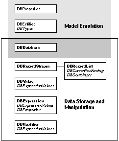
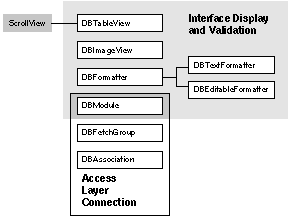

Release 3.3 Copyright ©1995 by NeXT Computer, Inc. All Rights Reserved.
| 5 |
Database Kit Classes and Protocols
| The classes and protocols in the Database Kit fall naturally into two groups, or layers: |
| The access layer provides the core of any Database Kit application. The classes and protocols therein represent the components of a database model, store data that's retrieved from a database server, and mediate data transactions with the server. | ||
| The interface layer, as its name implies, provides the classes and protocols that are used in your application's interface. The interface objects display data that's drawn from the access layer objects, let the user manipulate the displayed data, and provide controls that trigger data transactions. |
| The interface layer is a client of the access layer in the sense that the interface layer objects create instances of specific access layer classes, and depend on the functionality that these classes provide, while the access layer objects remain ignorant of the identity of the forces that prevail upon them. Although the practice is discouraged, it's possible to use the access layer without the interface layer. |
| The Database Kit Library |
| The Database Kit library doesn't discriminate between the two layers: When you include the library in your project, you're gaining the object definitions for both layers. In addition, the library is represented, in your code, by a precompiled header, so you can import the header files for the entire Kit through a single statement: |
#import <dbkit/dbkit.h>
| Introducing the Database Kit library to your application was discussed in the "Project Builder" section of Chapter 4. To summarize that material: |
| The library is shared, and is included in your application by linking against the file /usr/lib/libdbkit_s.a. | ||
| You must force the compiler to load the library's symbols; you do this by adding the following line to the file Makefile.preamble: |
OTHER_LDFLAGS = -u libdbkit_s -u libNeXT_s -u libsys_s
| The Access Layer |
| The classes and protocols in the Database Kit access layer take on two roles: |
| Model emulation. They realize, as objects, the components of a database model, as well as the adaptor that lies beneath the model. They also allow you to form a connection (through the adaptor) to the database server. | ||
| Data movement, storage, and manipulation. They provide memory into which data that's retrieved from the server can be stored, and allow individual data items to be manipulated and sent back to the server. |
| These roles work together to provide a model-based storage system for database data. The way this works in your application is that the modeling objects are used to configure the data-storage objects; data is then fetched from the server (as translated by the adaptor) and set in the storage objects. Put another way, the data-storage objects are containers forged from the molds of the modeling objects, and into which data is poured.
The class and protocols of the access layer are shown in Figure 71. (Class names are in bold, protocols are regular. The protocols that are conformed to by a class, or adopted by another protocol are shown in italic. Inheritance is depicted left-to-right.) |
|  |
| Figure 71. Access Layer Classes and Protocols
The classes and protocols of the access layer are examined in the following chapters: |
| Chapter 6, "Model Emulation" examines the DBDatabase class and the DBProperties and DBEntities protocols as they define modeling objects. | ||
| Chapter 7, "Connecting to the Server" briefly looks at the DBDatabase methods through which you connect your application to a database server. | ||
| Chapter 8, "Data Storage, Retrieval, and Manipulation" explains the basic techniques of configuring data-storage objects, retrieving data from the server, manipulating data, and sending modified values back to the server. | ||
| Chapter 9, "Advanced Record List Techniques" pays attention to the finer points of data storage. In this chapter, data-storage objects are fine-tuned, and techniques such as joining tables and creating master-detail tables are demonstrated. | ||
| Chapter 10, "Fetching and Saving Data" looks at the ways that you can fine-tune the data-fetching mechanism, and explains how to validate modified data. |
| One access layer class, DBBinder, is left out of the discussions in these chapters. DBBinder, a low-level class, gives you the most direct control of all aspects of access layer functionality. The DBBinder class description in /NextLibrary/Documentation/NextDev/GeneralRef/04_DatabaseKit/Classes gives a thorough treatment of the class. |
| The Interface Layer |
| The interface layer classes provide objects that display and validate data, and that provide the connection between the access layer and the user interface. The chart for the interface layer is given in Figure 72. |
|  |
| Figure 72. Interface Layer Classes |